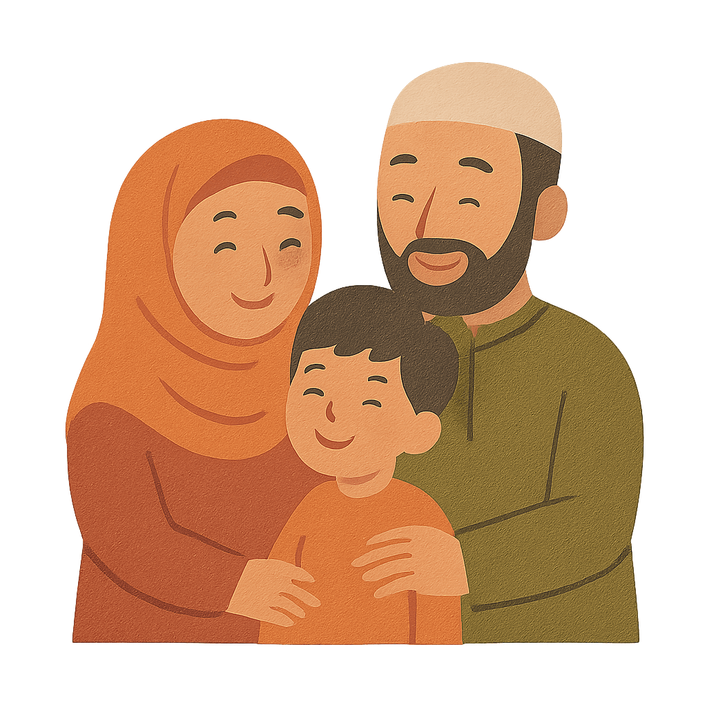

The Importance of Family in Islam

1. Respecting Parents
Islam places great emphasis on honoring and caring for one’s parents. The Qur’an often mentions obedience to parents right after worshiping Allah (e.g., 17:23).
2. Strengthening Family Bonds
Keeping family ties is a major value in Islam. The Prophet Muhammad ﷺ warned against cutting off family relationships and emphasized mercy within the home.
3. Mercy & Compassion
Love, patience, and understanding are foundational in Muslim households. The Qur’an describes marriage and family as a source of tranquility and mercy (30:21).